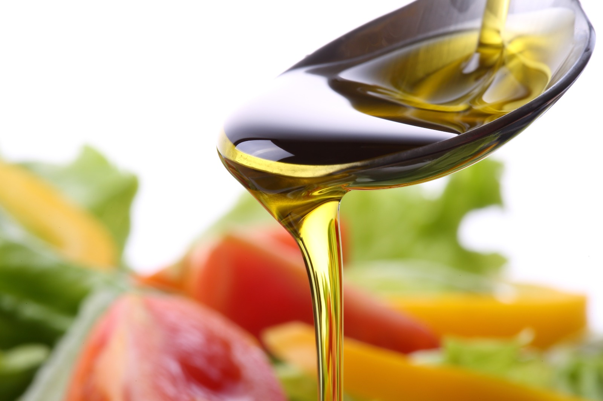

Date: 23 décembre 2021
Comment savoir si une huile d'olive est de bonne qualité ?
Dans: HOVE et santé
- Comment savoir si une huile d'olive est bonne
- Comment savoir si l'huile d'olive est de bonne qualité ?
- Comment savoir si l'huile d'olive est de bonne qualité ?
- Commentaires
- Laissez nous votre avis !
Avec la variété de produits que l'on trouve actuellement sur le marché, il est très difficile de différencier ceux qui sont de qualité de ceux qui ne le sont pas.
Aujourd’hui, chez Don Olivar, nous voulons vous aider à faire la différence entre les huiles d'olive de haute qualité et les huiles à bas prix ou de qualité inférieure.
Vous n'aurez plus aucun doute au moment de faire votre achat. Prenez bien note de tout !
Comment savoir si une huile d'olive est bonne ?
- Regardez l'étiquette : La première chose à prendre en compte pour choisir une huile d'olive de qualité est de lire l'étiquette du produit. Il s'agit d'une étape modeste mais très importante pour vérifier ses caractéristiques.
Si vous voulez consommer une bonne huile d'olive, vous devez vous assurer que l'étiquette porte la mention "Huile d'olive vierge extra", qui correspond à la meilleure qualité.
- Le processus de fabrication : La manière dont l’huile a été élaborée est importante. Il faut toujours rechercher la mention "première extraction à froid" sur l'étiquette, et donc éviter les produits étiquetés comme "pressés". Cela est dû au fait que les procédés de pressage traditionnels peuvent produire une oxydation de l'huile, alors que les machines modernes en acier inoxydable empêchent ce phénomène. C'est pourquoi l'huile d'olive de première extraction à froid est une huile de qualité supérieure.
- Démangeaisons dans la gorge : Vous avez probablement déjà connu cette démangeaison dans la gorge lorsque vous consommez de l'huile d'olive à sec. C'est un signe que l'huile que vous consommez est un produit de qualité. Voici pourquoi !
Cette démangeaison dans la gorge, qui peut même vous faire tousser, provient des polyphénols, des antioxydants naturels qui proviennent des olives elles-mêmes. Ceux-ci sont perdus lors du processus de raffinage auquel sont soumises les huiles d'olive de mauvaise qualité et, pour cette raison, cette sensation de démangeaison n'est pas perceptible en elles.
Comment savoir si l'huile d'olive est de bonne qualité ?
Continuons à examiner d'autres paramètres qui influencent la qualité de l'huile d'olive :
- La date d'embouteillage: il est toujours préférable d'acheter des huiles dont la date d'embouteillage est très récente. Cela signifie que l'huile d'olive a été produite à une date aussi proche que possible de celle à laquelle nous l'achetons au supermarché.
- Le type d'emballage : L'huile d'olive et le vin ont les mêmes ennemis naturels : l'air, la lumière et les températures élevées. C'est pourquoi vous devez éviter de les conserver dans des emballages transparents.
La bonne chose à faire est de la conserver dans des bouteilles sombres ou dans des étuis qui la protègent de la lumière, car c'est un produit très sensible à celle-ci et à l'oxygénation. Si elle est exposée à ces facteurs, elle perdra une grande partie de sa qualité. Faites donc très attention à la façon dont elle est exposée et emballée au supermarché !
- Tenez compte de son goût : Lorsque les spécialistes de la dégustation d'huile déterminent sa qualité, les arômes du produit sont un facteur déterminant. Tout d'abord, vous devez percevoir son amertume (saveur de base caractéristique de l'huile obtenue à partir d'olives vertes) et son acidité (environ 0,1). Plus l'acidité est élevée, plus la qualité est mauvaise.
Comment savoir si l'huile d'olive est de bonne qualité ?
Comme toujours, nous allons résumer ci-dessous les idées les plus importantes que nous avons vues dans l’article d'aujourd'hui, afin que tout soit beaucoup plus clair :
- Vérifiez sur l'étiquette que le produit présente les caractéristiques suivantes : que sa production est de première extraction à froid, qu'il a été mis en bouteille à une date récente et que l'emballage n'est ni transparent ni exposé à la lumière ou à des températures élevées.
- Vous devez toujours rechercher une huile d'olive extra vierge.
- C'est une qualité positive qu’une huile d'olive pique dans la gorge.
- Les arômes de l'huile d'olive sont déterminants : son amertume, et qu'elle ne soit pas excessivement acide
C'est tout ce qu’il faut savoir ! Nous espérons que tout a été clair et, bien sûr, que vous tiendrez compte de tous ces paramètres lorsque vous achèterez de l'huile d'olive.
Par: Don Olivar